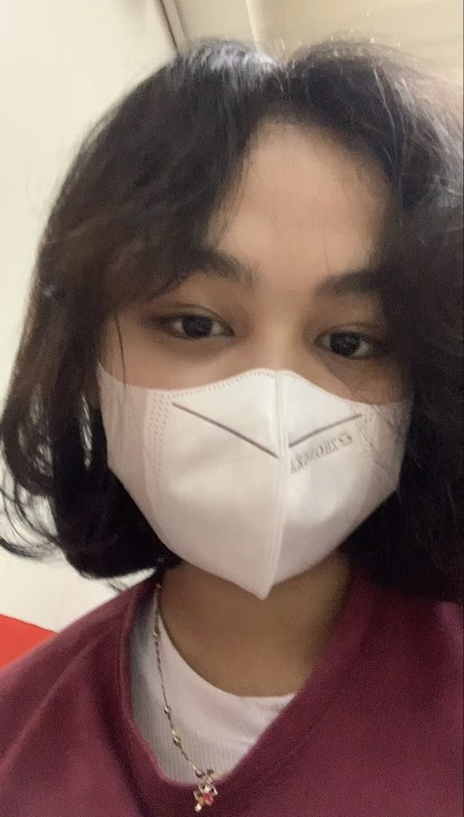
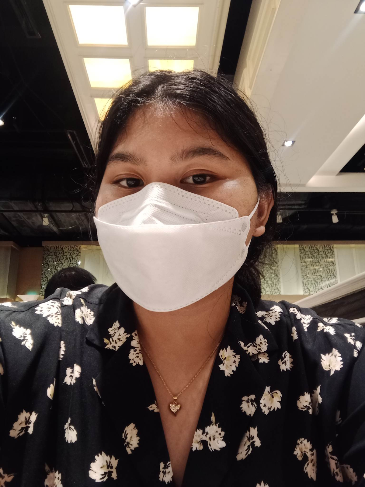
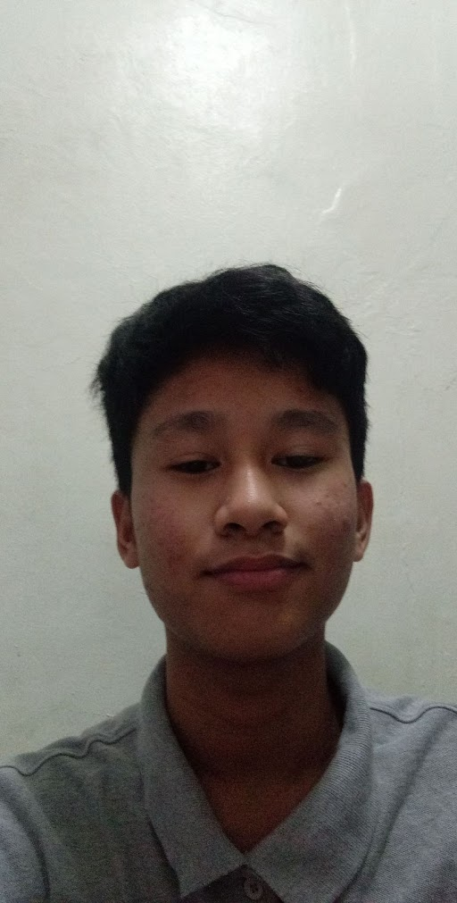
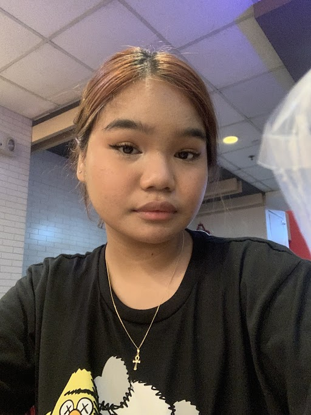
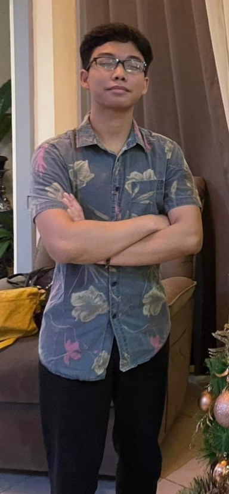

In this section are the introductions for the members that helped build the channel.
Zyla Rodejo:
Our one and only facilitator: Zyla. If we ever had the chance to take part in the Marvel Cinematic Universe, she’d do wonderful as Thanos; Zyla the Worksheet Collector. She’s a hard-worker but won’t make you feel like a burden, but would rather give you a purpose. If she thinks your current status is idle while the others are working their butts off, she would give you a task she thinks you can handle without much problems. Zyla is a fair person, she gives you a grade equivalent to the work you put in, just an overall cool, understanding, and hardworking leader, just a chill, non-dictator type of person.
Sabrina Denisse Escandor
As much as we hate to admit it, she’s the goofy one in our group. Always wondering what’s up, what is this and why is that. While Zyla would be great as Thanos, Sabrina would be great as Drax. While we discuss the plan of our answers in the worksheet, she’s the type of person who would ask midway, “Why is the worksheet?” Although a little airheaded, she’s always willing to help like the others. Groups won’t feel as special without people like her, we’re grateful to have her.
Lance Jem Ramos
We have the cool leader, the goofy head, and now the quiet one: Lance Jem, the baby boy of our group. He’s quiet most of the time, avoiding unnecessary talking. He may seem unapproachable to some, but he’s 100% not. If we were to scale how approachable he is from 1-10, he’d be 11. He may be silent, but he’s also deadly. Having answers to group questions, knowing how to do a certain task, never complaining, and whatnot. He can stand alone, even without much instructions given, he can still pull off very nicely.
Franzesca Rodriguez
While Lance seems like the embodiment of introvertedness, Franzesca is the complete opposite. She is the epitome of extrovertedness; being friends with almost everybody in the class, and on top of that, as a transferee. Having someone like her in the group is a big up for us, having her social skills maxed out, communicating with other people is child’s play.
Jan Andrei Bauson

The other quiet guy alongside Lance Jem. He may be inactive at times, but he surely pays back with hard work. The main programmer of our group, the one who creates the website whenever available. If it weren’t for him, we would have twice the amount of work. Quiet peeps who are not freeloaders, we’re fortunate to have two of them on our team.
Juan Miguel Lauron
Zyla is the leader, he's the vice-leader. Being in charge whenever she’s not around, giving tasks here and there. Juan Miguel is not your stereotypical vice-leader, being demanding, strict, and all. He’s a chill person, not setting his expectations from his members skyhigh(not in a bad way). He instructs the members on what tasks to do and how to do them, making sure that they would perform well.